9 ggdark
ggdark 提供了 ggplot2 内置主题(theme_gray, theme_classic等) 的”暗黑版本(dark version)“，例如 theme_gray(默认主题) 的暗黑版本为 dark_theme_gray。
diamonds_sub <- diamonds[sample(nrow(diamonds), 5000), ]
p <- ggplot(diamonds_sub) +
geom_point(aes(carat, price, color = cut)) +
scale_y_continuous(label = scales::dollar) +
guides(color = guide_legend(reverse = TRUE)) +
labs(title = "Prices of 5,000 round cut diamonds by carat and cut",
x = "Weight (carats)",
y = "Price in US dollars",
color = "Quality of the cut") +
theme_gray() ## ggplot2 default
p_dark <- p +
dark_theme_gray()
p_dark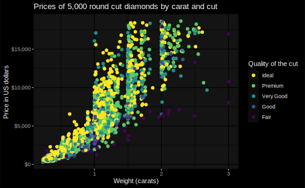
与在 ggplot2 中一样，我们可以自由修饰 ggdark 提供的主题：
p_dark +
theme(
plot.background = element_rect(fill = "grey10"),
panel.background = element_blank(),
panel.grid.major = element_line(color = "grey30", size = 0.2),
panel.grid.minor = element_line(color = "grey30", size = 0.2),
legend.background = element_blank(),
axis.ticks = element_blank(),
legend.key = element_blank(),
legend.position = c(0.815, 0.27)
)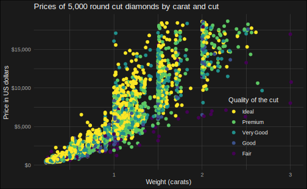
调用任意一个主题的 dark version 过后，一些几何对象的默认图形属性将发生改变（例如 geom_point 中 color 的默认值会变为白色），调用 invert_geom_defaults() 重置。
其他主题的暗黑版本：
mtcars2 <- within(mtcars, {
vs <- factor(vs, labels = c("V-shaped", "Straight"))
am <- factor(am, labels = c("Automatic", "Manual"))
cyl <- factor(cyl)
gear <- factor(gear)
})
p <- ggplot(mtcars2) +
geom_point(aes(wt, mpg, color = gear)) +
facet_grid(vs ~ am) +
labs(title = "Fuel economy declines as weight increases",
subtitle = "(1973-74)",
caption = "Data from the 1974 Motor Trend US magazine.",
x = "Weight (1000 lbs)",
y = "Fuel economy (mpg)",
color = "Gears") 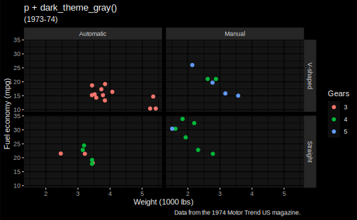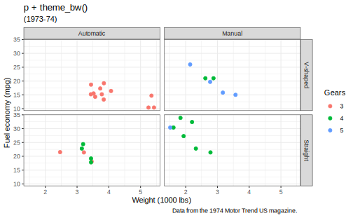
p +
dark_theme_linedraw() +
ggtitle("p + dark_theme_linedraw()")
p +
theme_linedraw() +
ggtitle("p + theme_liendraw()")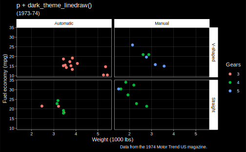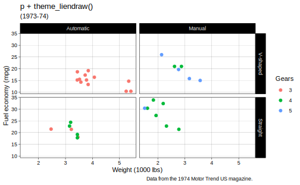
p +
dark_theme_light() +
ggtitle("p + dark_theme_light()")
p +
theme_light() +
ggtitle("p + theme_light()")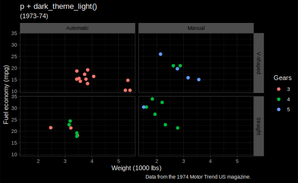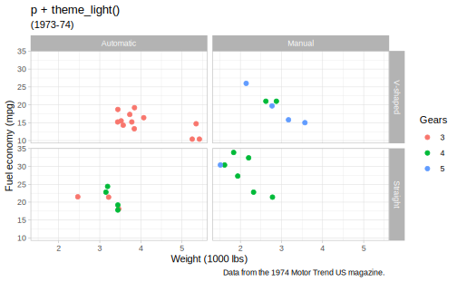
p +
dark_theme_dark() +
ggtitle("p + dark_theme_dark()")
p +
theme_dark() +
ggtitle("p + theme_dark()")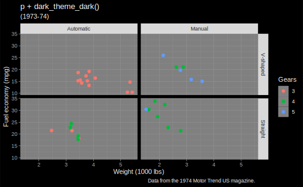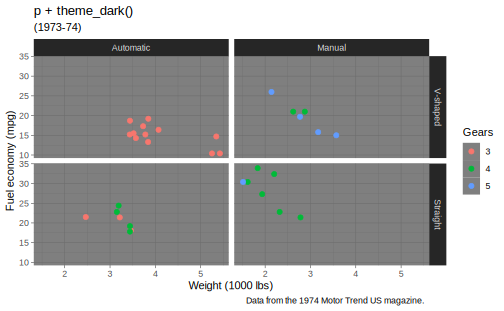
p +
dark_theme_minimal() +
ggtitle("p + dark_theme_minimal()")
p +
theme_minimal() +
ggtitle("p + theme_minimal()")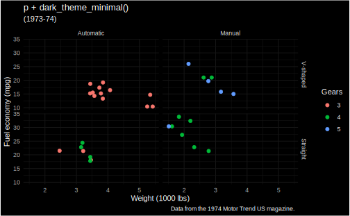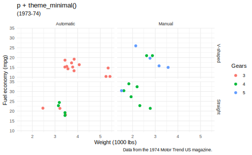
p +
dark_theme_classic() +
ggtitle("p + dark_theme_classic()")
p +
theme_classic() +
ggtitle("p + theme_classic()")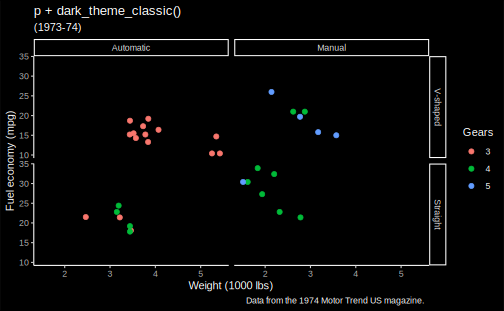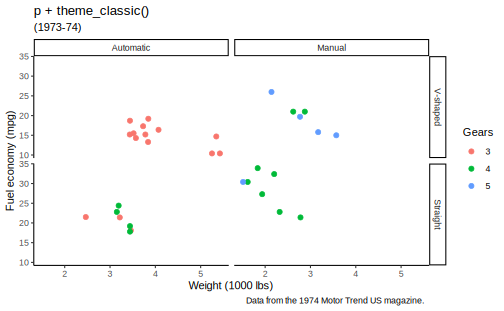
p +
dark_theme_void() +
ggtitle("p + dark_theme_void()")
p +
theme_void() +
ggtitle("p + theme_void()")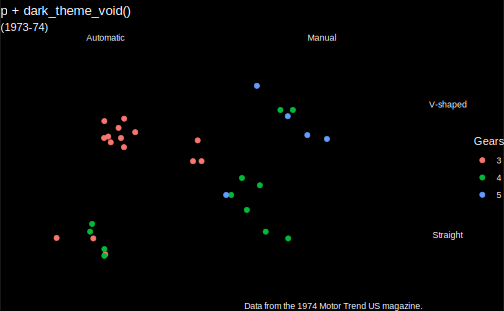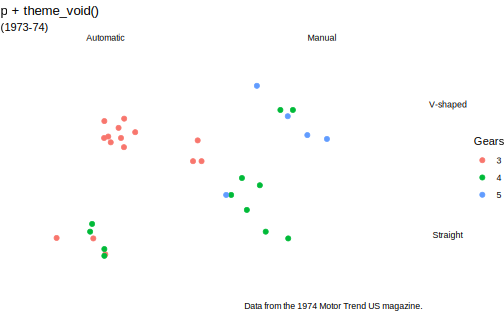
9.1 dark_mode
dark_mode() 是一个可以作用于任何主题的函数，将其变为对应的暗黑版本。
library(ggthemes)
p <- ggplot(mtcars2, aes(wt, mpg)) +
geom_point(aes(fill = vs), shape = 21) +
theme_fivethirtyeight()
p 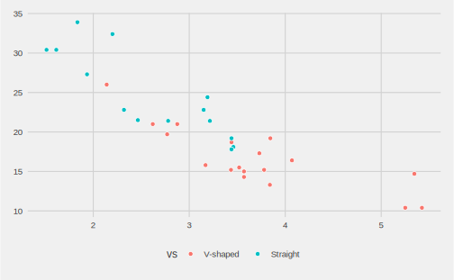
转变 theme_fivethirtyeight:
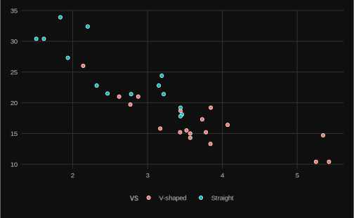